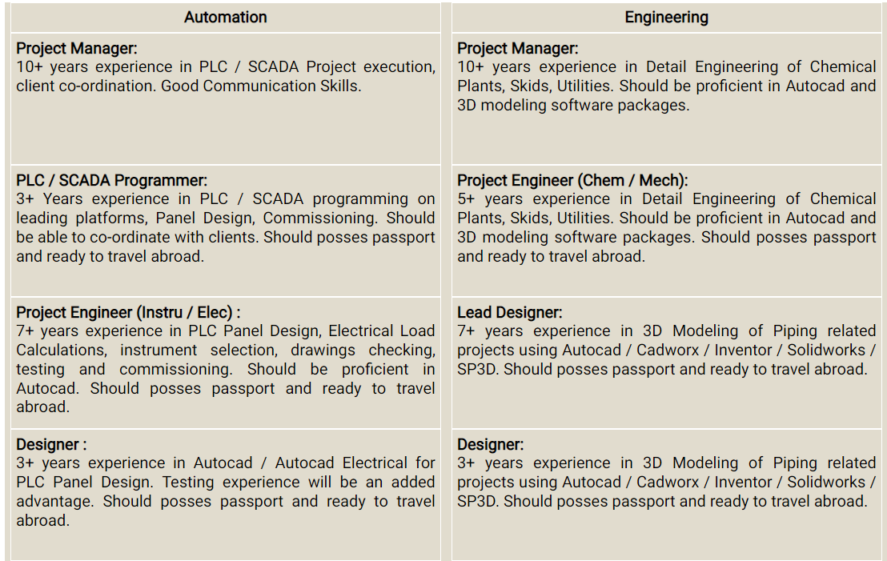

Trans Tech Projects is an organization that values contribution, provides opportunities, recognizes achievements and rewards results.
At Trans Tech Projects, you get to see company’s vision, and how you can play a key role towards meeting them practicing company’s values. You get to discuss growth areas and inputs on a regular basis with your seniors. This ensures you keep learning and growing. Your responsibilities are a mix and match of your current skill sets and roles, and some responsibilities for the future role that you are likely to play. This ensures that you are always a step ahead on your career. You get used to being empowered with the faith that you can do it.
Trans Tech Projects is always looking for Managers, Engineers, Designers for various disciplines as below:
